Сноубордические сны
- 26-27 января 2008 -
Вот сижу дома, болею... Кто-то на Мамай поехал кататься,
кто-то на Святой Нос... А у меня настроение хреновое, вот и
решил парочку отчетов за январь написать, вспомнить
лучшие времена, может еще хреновее станет...
Целью романтической прогулки по темному-темному лесу была избушка, но не на курьих ножках, а избушка со стеклопакетами. Совершала романтическую прогулку естественно влюбленная парочка, а как же еще, точнее - кто же еще попрется ночью в лес, в покрытую изнутри инеем избушку. Любовь - она же греет, если она есть конечно. А если ее нету - пилите дрова, топите печку, спите в пуховых одеялах. Короче, мы со Светой пошли гулять в 18:36, нашли избушку в 21:26, пожарили блинов, наелись и легли спать. А кто там ночью придет - медведь, черный фрирайдер, или друзья с маршрутки, это фиг угадаешь. Ну вроде наши пришли, а может и не наши, утром разберемся.
Утром было подозрительно тесно. И было почему - на общей койке покоилось 8 человек, а с учетом габаритов одного товарища можно смело сказать - 9! К обещавшимся приехать Вове и Лене добавим просившихся вписаться Тимона и Димасика, плюс собравшийся в последний момент, по случаю подачи маршрутки к подъезду, Лёха Пестов с фанерами (это не девушки, это такие доски для полки, они на улице ночевали). Ну и отдельного респекта заслуживает Истомин Никита Андреевич - человек первый раз собрался на Мамай, доехал с незнакомыми сноубордистами на маршрутке, дошел как надо до кунга, а там никого нет, и никто его не ждет! Вот так бывает, представляете? Развернулся и пошел, но не обратно, а прямо к нам в избушку, где со спокойной совестью и верой в человечество лег спать в общей куче. Добрейшей души человек, побольше бы таких...
Утренние раскачки кроме традиционного толкания жопами в тамбуре дополнились свежим взглядом на жизнь от Тимона и Димасика. Эти два товарища являются для меня эталоном распиздяйства, естественно в хорошем смысле этого слова. Как бы я хотел быть таким же распиздяем, просыпаться позже всех и ругаться нехорошими словами, а вечером пить водку... "Но вот что-то вот все не то, да и не понятно что!"(с)Шнур. Эх, не смогу я быть таким, пить не умею нифига! А таких не берут в "космонавты"...
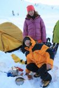
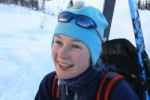
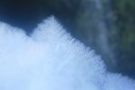
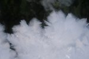
Ночью на маршрутке много народу приехало, в чем мы убедились выйдя в свет и пойдя покататься. Некоторые приехавшие даже на Лесной пошли тропить, уважуха! Ну а мы замутили маршрут "Три березы - Мамай - Высокий цирк" с остановками на Мамае и перед спуском в Высокий. Чего-то так подумалось Лёхе немного потусить на солнышке, в закрытой от ветра ложбинке, где явно пахло весной и прыжками с дропов. Я и Света его поддержали, ну и остальные потом присоединились.
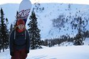
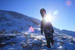
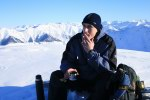
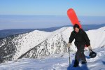
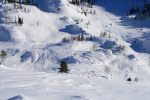
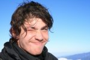
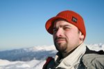
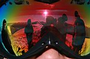
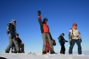
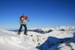
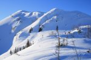
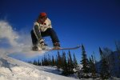
Вот так до заката и прыгали, и катались понемногу. Потом как выкатили через высокий цирк, так сразу там всем понравилось. Ибо лучше фрирайда ничего богоугоднее нету! А секс - от лукавого! И водка тоже, хотя ее вечером пили не мало. Гости вечерком приходили - бородатый Нестер (деньрожденьщик он сегодня), Денис Бек, Юра Гил с девушкой, а также неразлучные друзья Кузьмин и Мяктов. А Лёха прикрутил козырную полку из фанеры и лег на ней спать... А все остальные так внизу и ворочались с боку на бок, ибо в силу своей человечности не могли бросить самого толстого на пол, где возле печки ему как раз было теплое двуспальное место...
|
|
|
... это мы спим и такие сны видим ... |
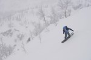
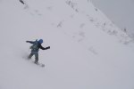
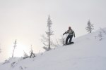
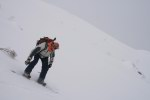
В воскресенье кто не батонил, тот еще раз с Мамая через Высокий катанул. Очень даже неплохо в условиях "снежной слепоты". Можно сказать оттачивали навыки катания на ощупь...
А кто батонил, те я даже не знаю где катались. И катались ли вообще, история умалчивает...
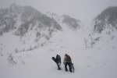
Февраль 2008
Лёха Белокрылов (Слюдянский)
Фотографии автора